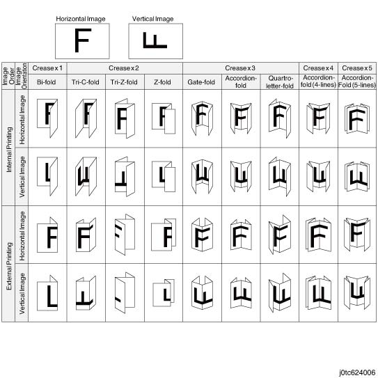
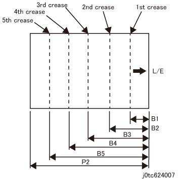
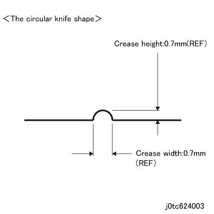

6.2.5.12 TCBM/TBM 折痕 特性 
此 功能 puts 折痕. The supported features 是 如下.
最大到 five 折痕 可以 put 每 纸张 of 纸张.
Valley 折叠, 在哪里 the mountain of 折痕 comes to 侧面 2 of 纸张, 和 mountain 折叠, 在哪里 the mountain comes to 侧面 1, 是 可用的 (折叠 in the reverse 方向 在...期间 小册子 输出).
以下 显示 results of combinations 之间 the 号码 of 折痕 和 valley/mountain 折叠. 但是, the results depend 在...上 instruction 从 the controller.

(图 1) tc624006
标称 折痕 Positions

(图 2) tc624007
项目
标称 值 (mm)
单面/单个 折叠
Z 折叠
C 折叠
Z 折叠 半/一半 纸张
B1
P2x(1/2)
(P2+4)x(1/3)-2
(P2+10)x(1/3)-2
P2x(1/4)-1
B2
-
(P2+4)x(2/3)-2
(P2+10)x(2/3)-2
P2x(1/2)
B3
-
-
-
-
B4
-
-
-
-
B5
-
-
-
-
项目
标称 值 (mm)
折痕 - 门折
折痕 - 手风琴折
折痕 - 3-折叠 手风琴折
折痕 - 双面/双
Parallel
4-折叠 手风琴折
5-折叠 手风琴折
B1
P2x(1/4)-4
P2x(1/4)-1
P2x(1/4)-1
(P2+4)x(1/5)-2
(P2+4)x(1/6)-2
B2
P2x(1/2)
P2x(1/2)
P2x(1/2)
(P2+4)x(2/5)-2
(P2+4)x(2/6)-2
B3
P2x(3/4)+4
2x(3/4)+1
2x(3/4)+1
(P2+4)x(3/5)-2
(P2+4)x(3/6)-2
B4
-
-
-
(P2+4)x(4/5)-2
(P2+4)x(4/6)-2
B5
-
-
-
-
(P2+4)x(5/6)-2
以下 显示 the performance 当...时 折痕 是 generated.
The 列表 显示 the performance ...所需的 折痕 和 the 实际 performance is determined by the features being combined.

Productivity refers 到 productivity 当...时 IOT 送纸 纸张 at the pitch notified by the TCBM, 和 当...时 the 相同 设置 号码 is continuously used.
Performance 在...期间 折痕 at 供纸 速度 of 1000 mm/s (纸张/Minute) 尺寸/
方向
Dimension FS/SS
小册子 输出
顶部 纸盘 输出 (指定的 by 折叠 类型)
折痕
1 units
折痕
1 units
折痕
2 units
折痕
3 units
折痕
4 units
折痕
5 units
小册子
单面/单个 折叠
C 折叠
Z 折叠
Z 折叠 半/一半 纸张
门折
手风琴折
双面/双 Parallel
手风琴折
(4-折叠)
手风琴折
(5-折叠)
A4L
297.0x210.0
-
38(31)
26(23)
20(18)
-
-
8.5 X 11 L (Letter)
279.4x215.9
-
38(31)
26(23)
20(18)
-
-
8.5 X 11 S (Letter)
215.9x279.4
38(31)
38(31)
27(23)
21(18)
17(15)
14(13)
A4 S
210.0x297.0
37(31)
37(31)
26(23)
21(18)
17(15)
14(12)
A3 S
297.0x420.0
36(30)
36(30)
24(22)
19(18)
16(15)
14(13)
11 X 17 S (Ledger)
279.4x431.8
35(30)
35(30)
24(22)
19(18)
16(15)
14(13)
() 指示 the case 当...时 裁切 is executed.
Performance 在...期间 折痕 at 供纸 速度 of 1000 mm/s (纸张/Minute) 尺寸/Orientation
Dimension FS/SS
顶部 纸盘 输出 (指定的 by 折叠 dimensions)
1 折痕
2 折痕
3 折痕
4 折痕
5 折痕
A4L
297.0x210.0
37(30)
25(22)
20(18)
16(15)
14(12)
8.5 X 11 L (Letter)
279.4x215.9
36(30)
25(22)
20(18)
16(15)
14(12)
8.5 X 11 S (Letter)
215.9x279.4
35(28)
24(21)
19(17)
16(14)
13(12)
A4 S
210.0x297.0
34(28)
24(21)
19(17)
15(14)
13(12)
A3 S
297.0x420.0
29(28)
21(21)
17(17)
14(14)
12(12)
11 X 17 S (Ledger)
279.4x431.8
29(28)
21(21)
17(17)
14(14)
12(12)
() 指示 the case 当...时 裁切 is executed.
标称值 of 折痕 位置 is determined by calculation 基于 折叠 specifications 指定的 by 纸张 长度 in 纸张 feeding 方向, 和 组合 的 号码 of 折痕 和 the mountain/valley 折叠.The 值 可以 adjusted 在...之内 a 范围 of +/-20 mm.
The 折叠位置 accuracy, 包括 歪斜, is 如下.
The accuracy of 折痕 位置 is guaranteed 当...时 标准的 (triangle-shaped) 折痕 Blade, 哪个 已说明 in 11 以下, is used.
折痕 条件
Accuracy of 折痕 位置
1 折痕 (折痕 at 92 mm或 further 从 the 引线/导向 边缘 of 纸张)
+/-1.0mm
1 折痕 (折痕 at 最大到 92 mm 远离 the 引线/导向 边缘 of 纸张)
+/-1.5mm
2 折痕 or 更多
+/-1.5mm
The pressure 当...时 putting 折痕 可以 adjusted in five stages.
The depth 和 shape 的 折痕 是 defined in boundary samples.
折痕 不 原因 tear, contamination, 和 crumpled 纸张.
纸张 division 没有 折痕 is defined in boundary samples.
A round-shaped Blade is provided as the blade 用于 折痕.
The shipment 配置 和 finished shape of 折痕 Blade 是 shown 以下.
折痕 Shape
Destination
FB
FBAP/WW
Round shape
标准
标准

(图 3) tc624003
当...时 a round-shaped 折痕 Blade is used, the 第一个 和 最后一个 纸张 of 纸张 是 creased in 小册子 模式.
纸张 和/与 折痕 (编号 折叠) is 输出 to 顶部 纸盘.
It is possible to 折痕 小册子 纸张 用于 哪个 单面/单个 折叠, 中央 折叠, or 骑马钉 is 指定的 (to increase the strength of 折叠).
裁切 和 折痕 当...时 指定的 by dimensions
最大到 five 折痕 可以 put.
当...时 两个 裁切 和 折痕 是 executed, 折痕 位置 is 最大到 386 mm 远离 the 引线/导向 边缘 of 纸张. (Restriction of 裁切 Regi 辊. 此 restriction 不是 applied 当...时 仅 折痕 is executed)
当...时 纸张 is creased at 在...之内 62 mm 从 the 引线/导向 边缘 of 纸张, 纸张 传输 不是 guaranteed.
4-折叠 手风琴折 和 5-折叠 手风琴折 不是 可用的 用于 sizes shorter 比 279 mm 和 longer 比 450 mm in the SS 方向.
[Shorter 比 279 mm: Restriction of 裁切 最小 pitch (包括 调整 值). Longer 比 450 mm: Restriction of Trip Regi 辊 (包括 the 调整 值)]